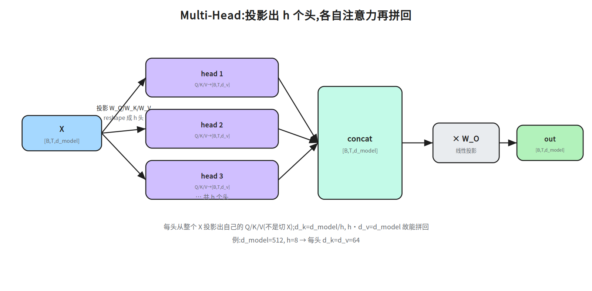
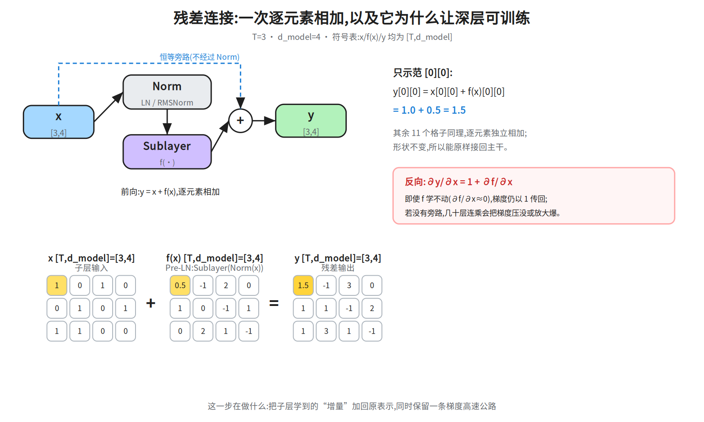
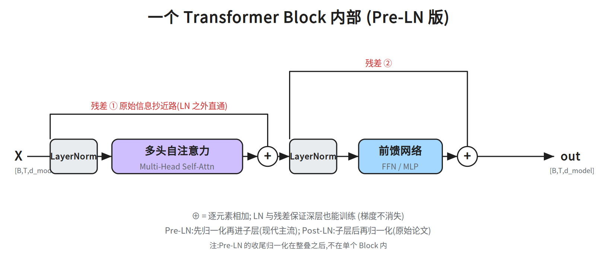
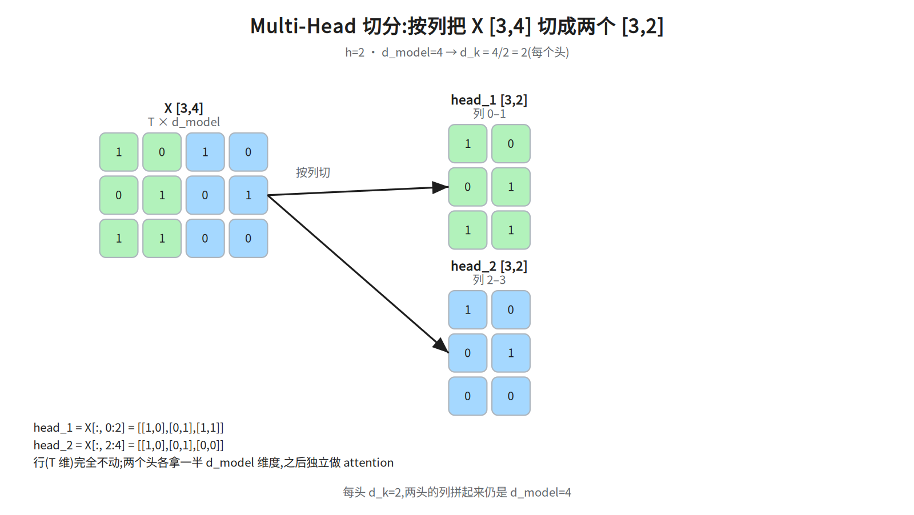
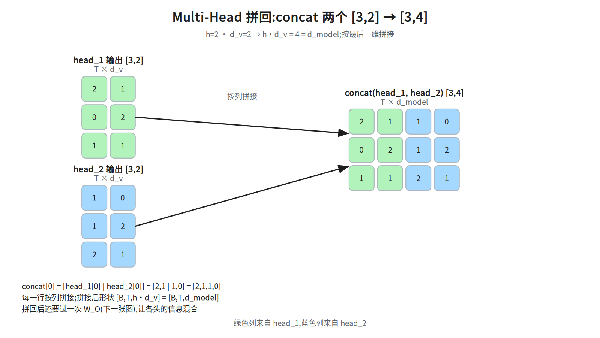
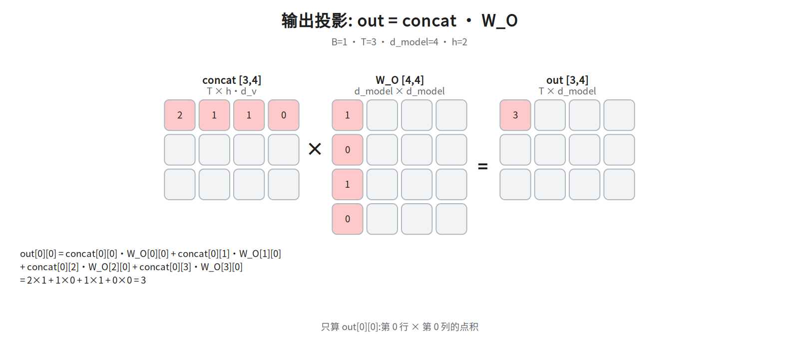
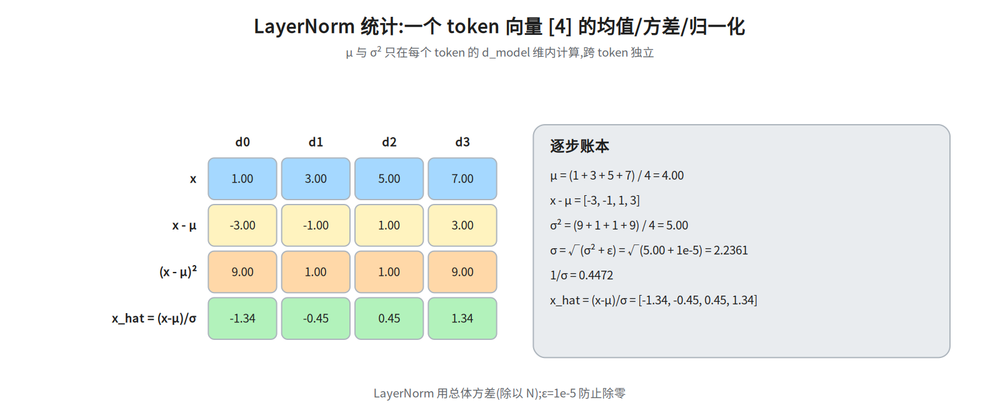
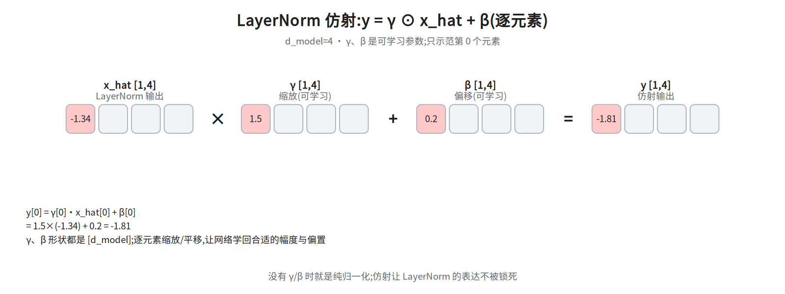
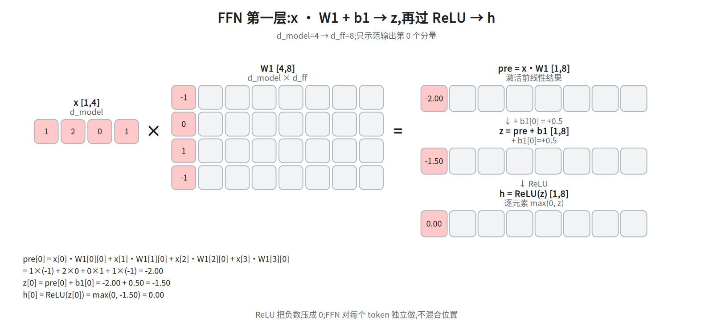
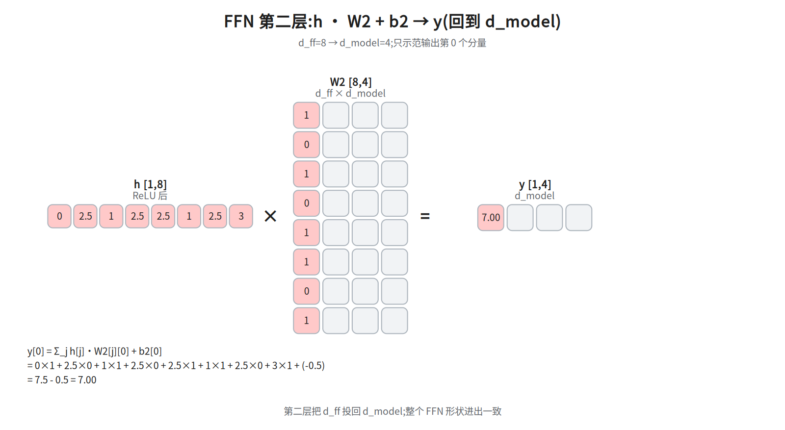

第三层 · 加强 —— Multi-Head、残差、LayerNorm、FFN¶
本层回答:把第二层的单头 attention 加上多头、残差、归一化、前馈网络,组装成一个能重复堆 N 层、还能训得动的 Block。
0. 依赖图(学习顺序)¶
根节点是可以无条件接受的事实;箭头表示「前者支撑后者」。学习顺序 = 从根到汇点的拓扑序。
补充口径:C/E/G 三条本层都会从头解释,不是要求你提前掌握的前置——§2 的求导框给「梯度难传」的依据,§3 给「激活漂移」的动机,§4 给「为什么必须逐位置非线性」。标成「根」只表示「本层不再往前追问」;现在讲不出理由也没关系,读完 §2–§4 再回来看。
graph TD
A["单头的加权平均<br/>抑制多子空间并行"] --> B["Multi-Head<br/>h 头并行 → 拼接 → 投影"]
C["深层网络梯度难传"] --> D["残差连接<br/>x + f(x)"]
E["激活分布漂移 → 训练不稳"] --> F["LayerNorm"]
G["需要逐位置的非线性变换"] --> H["FFN<br/>d → d_ff → d"]
B --> I["Attention 子层"]
D --> I
F --> I
I --> J["Pre-LN 组装<br/>x + SubLayer(Norm(x))"]
F --> J
H --> J
D --> J
J --> K["Block × N"]1. Multi-Head Attention:为什么一个头不够¶
单个 attention 头的局限不是「只能表达一种关系」——一个 softmax 行本来就可以有多个峰;Vaswani §3.2.2 的原话是「With a single attention head, averaging inhibits this」:单头的加权平均会抑制「在不同位置、不同表示子空间上同时关注」。但语言里的关系是多样的:语法依存、指代、语义相近、位置邻近…… 一个 softmax 分布很难同时装下这些。

做法:把 d_model 切成 h 个子空间,每头独立做一次 attention,再拼回来。
形状记法先定一下:B = batch 大小(一次并行喂进模型的句子条数,训练时是超参、推理时常为 1),T = 序列长度(每句的 token 数,句间可以不同),d_model = 每个 token 的向量维度。下面所有 [B, T, …] 的第一维都是 batch;§3 里 BatchNorm 说的「batch 统计量」就是沿这个 B 维统计出来的量,B 越小时它越不稳。
设 d_model = 512, h = 8 → 每头 d_k = d_v = d_model / h = 64
对第 i 个头 (i=1..h):
Q_i = X·W_Q^i [B,T,d_k] K_i = X·W_K^i V_i = X·W_V^i
head_i = Attention(Q_i, K_i, V_i) [B,T,d_v]
拼接: concat(head_1..head_h) [B, T, d_model] (因为 h·d_v = d_model)
投影: out = concat(...) · W_O W_O [d_model, d_model] → [B, T, d_model]
class MultiHeadAttention(nn.Module):
def __init__(self, d_model, h):
super().__init__()
self.h, self.d_k = h, d_model // h
self.W_q = nn.Linear(d_model, d_model) # 一次投影出所有头,省循环
self.W_k = nn.Linear(d_model, d_model)
self.W_v = nn.Linear(d_model, d_model)
self.W_o = nn.Linear(d_model, d_model)
def forward(self, x): # [B, T, d_model]
B, T, _ = x.shape
# 投影后 reshape 成多头: [B,T,d_model] -> [B,T,h,d_k] -> [B,h,T,d_k]
def split(w): # 返回 [B, h, T, d_k]
return w(x).view(B, T, self.h, self.d_k).transpose(1, 2)
Q, K, V = split(self.W_q), split(self.W_k), split(self.W_v)
scores = Q @ K.transpose(-2, -1) / (self.d_k ** 0.5) # [B, h, T, T]
A = scores.softmax(dim=-1) # [B, h, T, T]
out = A @ V # [B, h, T, d_k]
out = out.transpose(1, 2).reshape(B, T, -1) # [B, T, d_model]
return self.W_o(out) # [B, T, d_model]
代码里这几个 API 一句话交代（本节后不再重复）：
nn.Module：PyTorch 所有网络层的基类——继承它、在__init__里登记子层、实现forward；之后写mha(x)就等于调forward(x)。nn.Linear(in, out)：可学的仿射层y = x·Wᵀ + b，它的weight形状是[out, in]（第 0 维是输出维度），所以nn.Linear(d_model, d_model)的weight是[d_model, d_model]。view(B, T, h, d_k)：把最后一维d_model重新解释成h × d_k（只换形状、不动数据）；transpose(1, 2)再把[B,T,h,d_k]挪成[B,h,T,d_k]，让每个头各占一个矩阵。@：矩阵乘（等价torch.matmul），Q @ K.transpose(-2, -1)就是每头算QKᵀ。softmax(dim=-1)：在最后一维做 softmax，即每个 query 对所有 key 的分数归一化成和为 1 的权重。
顺序上再强调一次：先对完整的 x 做投影（self.W_q(x)），再 view/transpose 按头拆开——不是先把 x 按列劈成 h 份。
维度追踪:
| 步骤 | 形状 |
|---|---|
| 输入 X | [B, T, d_model] |
| 每头 Q/K/V | [B, h, T, d_k] |
| 每头 scores | [B, h, T, T] |
| 每头 out | [B, h, T, d_k] |
| concat + reshape | [B, T, h·d_k] = [B, T, d_model] |
· W_O |
[B, T, d_model] |
计算量没变:每头把维度除 h、再做 h 次,总量与单头 d_model 相当(约 O(T²·d_model)),但表达能力更强。这也是它名字里"多头"而非"更大单头"的意义。
多头为什么有效(面试):类似 CNN 的多通道——不同头学不同的关注模式(可视化能看出来),但类型要按来源说:Voita et al. 2019 归纳的专门头只有三类——位置头、句法头、关注稀有词的头;「指代头」出自 Clark et al. 2019,不在这个框引用的来源里。关键是让模型在多个表示子空间并行地找关系,而不是逼一个头兼顾所有。
诚实补充:多头并不保证每头都学到不同的东西——研究表明存在大量冗余头——Voita et al. 2019 在 WMT 英俄上把 48 个 encoder 头(encoder = 编码器栈,第四层才讲;这里只需知道它是一个 6 层、每层 8 头的栈,所以 48 = 6×8,被剪的只是这一半结构里的头)剪到 10 个,BLEU 掉 0.15(是极小损失,不是不掉点;先给刻度:BLEU 是机器翻译的 n-gram 重合度自动评分,通行口径 0–100 分、越高越好,WMT 英俄这类任务上的强系统一般在 25–30 分,所以 0.15 分约等于 0.5% 的相对差——这就是「极小」的依据;范围仅限 encoder、仅这一语言对),多个头会被注意力层最后的
W_O混合起来。所以"多通道"是类比不是机制保证;被追问时别把它说死。现代变体 MQA/GQA(第五层)会动 K/V 的共享方式,那是为了省推理显存,和多头的原始动机不同。 没学过 CNN 的话这个类比可以整句跳过(卷积/通道不在本层前置里):要记的只有——每头一套自己的投影矩阵,等于在 h 个
d_k维子空间里各算一次 attention 再拼回d_model;“多通道”只是帮助记忆,不是机制保证。
2. 残差连接(Residual / Skip Connection)¶
前置:本节用到的求导记号(没学过反向传播也能读)。 训练有一个损失
L;反向传播就是用链式法则把∂L/∂y一层层往回乘:若y = g(x),则∂L/∂x = (∂y/∂x)ᵀ·∂L/∂y。其中∂y/∂x叫雅可比矩阵——y 的每个分量对 x 的每个分量求偏导排成的表。多层串联时,回传的梯度就是一串雅可比矩阵连乘;每乘一次尺度大致被一个“放大/缩小系数”乘一次,几十层下来系数 <1 就指数衰减到 0(梯度消失),>1 就指数放大(梯度爆炸)。下面的∂(x+f(x))/∂x = 1 + f'就是在看这一次连乘里的矩阵长什么样。
把子层的输入 x 原样加到输出上。两个作用:
- 梯度高速公路:反向传播时
∂(x + f(x))/∂x = 1 + f',那条1让梯度可以无衰减地直通到浅层。没有它,几十层堆起来梯度就消失/爆炸了。 - 恒等映射的默认选项:让子层只需学"相对于输入的增量",学不动时直接输出 0 也能把 x 传下去(最坏情况是恒等),训练更稳。
代价:残差要求输入输出同形状,所以子层输出必须映回 d_model。原论文取 d_v = d_model/h,使 concat 宽度恰好是 d_model;更一般地,W_O 可以把 h·d_v 映回 d_model,并不强制 h·d_k=d_model。
（和「常见坑」第 1 条对照着读:那条说的是原论文「让 concat 宽度恰好等于 d_model」的取法(d_v=d_model/h),是习惯约定;这里的「不强制」说的是形状上的硬性约束只有「子层输出能映回 d_model」,concat 宽度不必等于 d_model。两句不冲突,层次不同。）
2.1 数值演算:残差到底加了什么¶

取 T=3, d_model=4 的小例子,x 是子层输入,f(x) 是子层输出(没过 Norm —— 本图是 Pre-LN,y = x + Sublayer(Norm(x)),Norm 只作用在旁路之外的支路上,见下方注记),两者形状都是
[T, d_model] = [3,4]:
x = [[1, 0, 1, 0], f(x) = [[0.5, -1, 2, 0],
[0, 1, 0, 1], [1, 0, -1, 1],
[1, 1, 0, 0]] [0, 2, 1, -1]]
y = x + f(x) # 逐元素:y[i][j] = x[i][j] + f(x)[i][j]
y[0][0] = 1.0 + 0.5 = 1.5
y = [[1.5, -1, 3, 0],
[1, 1, -1, 2],
[1, 3, 1, -1]] # 形状仍是 [3,4]
关键不是加法本身,而是反向传播:∂y/∂x = 1 + ∂f/∂x。那个常数 1 来自旁路,它不经过 Norm、不经过子层,
所以即使子层学不动(∂f/∂x≈0),梯度仍能以 1 传回浅层。没有旁路时,几十层的雅可比连乘会把梯度压没/放大爆。
注意:残差旁路连接的是子层输入 x 和子层输出,不是把 Norm 之后的向量再加一遍。 Pre-LN 的写法是
y = x + Sublayer(Norm(x));旁路里的x保持原样。图只画了 Pre-LN。Post-LN 是
y = Norm(x + Sublayer(x)):旁路先与子层输出相加,再一起过 Norm, 恒等路径被 Norm 打断,深层更容易失稳——这正是 §5 说的 Pre-LN 动机。本节先用到的两个词（还没讲，先当黑箱）：
Norm就是 LayerNorm——对每个 token 的 \(d_model\) 维减均值、除标准差再仿射，§3 才正式定义；Pre-LN/Post-LN指 Norm 放在子层之前还是之后，§5 才展开。本节要算的只是「旁路里的 \(x\) 原样相加」，这件事与 Norm 摆在哪一侧无关——所以 §0 图里 D（残差）和 F（LayerNorm）是并列前置节点：残差机制本身不依赖 LN，只是套进 Pre-LN 组装时，Norm 落在旁路之外的支路上（\(y = x + \text{Sublayer}(\text{Norm}(x))\)）。此处只需记住「旁路那一路没有 Norm」，§3 再回看 Norm 的定义，§5 再回看两种摆法的差别。
3. LayerNorm:归一化¶
对每个 token 的 d_model 维做归一化(减均值、除标准差),再乘可学的 γ、加 β。
口径先说清:这里的标准差按总体算,即方差 = Σ(xᵢ−μ)²/N(除以 N,不除 N−1),与 PyTorch nn.LayerNorm 一致。§5.5 ④ 的 σ²=(9+1+1+9)/4=5.00 用的就是这个口径;若按样本标准差 ÷(N−1) 会得 20/3≈6.67、σ≈2.582,后面的 x_hat 与 −1.81 就全对不上。
ε 是什么(本层第一次出现,顺手交代):默认 1e-5,加在方差上再开方,只干两件事——某维方差恰好为 0 时避免 0 除,以及让浮点计算更稳。它小到不改变可见数字:§5.5 ④ 里 σ₀²=5.00,5.00+1e-5 再开方仍是 2.2361(前 4 位不变),所以 x_hat 与 −1.81 和不含 ε 时一致;算出来「没变化」不是漏项。为什么要 γ/β?归一化把每层输入限制在零均值、单位方差,虽然稳定但限制了表达力;仿射参数让模型自己学回合适的尺度(γ)与偏移(β),相当于“归一化后再给模型一个可调的旋钮”。
μ = mean(x) # 沿最后一维(d_model)
σ₀ = std(x) # 总体口径(÷N);含 ε 的那个记作 σ = √(σ₀²+ε),与 §5.5 ④ 同记号
LayerNorm(x) = γ · (x - μ) / √(σ₀² + ε) + β
norm = nn.LayerNorm(d_model)
# 对最后一维归一化,每个 token 独立
**σ 别写成两个意思:** 分母是 `√(σ²+ε)`,所以下面统一记 `σ = √(std(x)² + ε)`——先按总体口径算 `std(x)`,平方、加 ε、再开方;不是 `√(std(x))`,也不是把 `std(x)` 直接叫 σ。§5.5 ④ 的 `σ²=5.00` 指 `std(x)²`。```
**为什么用 LayerNorm 而不是 BatchNorm(面试高频)?**
| | 归一化维度 | 对 batch 的依赖 | 适合 NLP 吗 |
|---|---|---|---|
| BatchNorm | 跨 **batch** 的同一特征 | 强,依赖 batch 统计 | 差 |
| LayerNorm | 每个样本**内部**(d_model 维) | 无 | 好 |
原因:NLP 序列长度可变、batch 内句子长度不一,BN 的 batch 统计量不稳定;LN 对**每条样本独立**、与 batch 大小无关,推理时也无需存运行统计量。所以 Transformer 全程用 LN。
**补上 §0 说的「激活漂移」到底指什么（§0 承诺由本节给动机）。** 训练时每层的输入分布不是固定的：前面层参数一更新，这一层收到的激活的均值/方差就跟着变；越深，这种偏移经过的层数越多、被放大的机会越大（某几维尺度暴涨、出现极端值）。后果是数值尺度漂移——落进饱和区的那部分梯度趋近 0，过大的方向又把梯度顶爆，表现为 loss 抖、深层训不动，这就是「激活分布漂移 → 训练不稳」（§0 的 E 节点）。LayerNorm 的做法是在**每层入口**把每个 token 的 $d_model$ 维重新拉成零均值、单位方差，再用 $γ/β$ 学回需要的尺度：不管上一层把分布推成什么样，这一层入口的尺度都被钉在固定范围，深了也不至于逐层累积漂移。
口径说明：原始动机用的是「内部协变量偏移（internal covariate shift）」这一说法；后续工作（如 Santurkar et al. 2018 对 BatchNorm 的分析）认为「减少偏移」并非归一化起效的主要解释，更站得住的说法是它让优化曲面更平滑。被追问时两句话都给，别把 ICS 说成定论；但「逐层固定尺度让深层可训」这个工程结论是实测成立的。
## 4. Position-wise FFN:前馈网络
每个位置**独立**过两层 MLP(位置之间不混合):
- 中间维度 `d_ff` 通常 `= 4 · d_model`(原论文 512→2048)。
- 式中的“激活”原论文取 **ReLU**:`ReLU(z) = max(0, z)`,逐元素保留正数、把负数压成 0。它是**非线性**的来源:没有它,`W₂(W₁x+b₁)+b₂` 会塌成一次线性变换,FFN 等价于一个矩阵;有了它才能拟合分段线性的复杂函数。现代模型多换 GELU / SwiGLU(第五层),作用相同。
- 张量形状:**逐位置**作用,`[B, T, d_model] → [B, T, d_ff] → [B, T, d_model]`,形状进出不变。
- 它是**逐 token** 的,不做跨位置交互——跨位置交互由 attention 负责。
```python
ffn = nn.Sequential(
nn.Linear(d_model, 4 * d_model),
nn.ReLU(), # 原论文;现代用 GELU / SwiGLU(第五层)
nn.Linear(4 * d_model, d_model),
)
FFN 的作用(面试): 它是 Block 里参数量最大的一部分(两层共 2·4·d_model² = 8·d_model²,远超 attention 的 4·d_model²)。直觉上 attention 负责在位置间搬运/汇聚信息,FFN 负责对每个位置的信息做非线性变换与"记忆"——有研究把 FFN 的键值对当机制解释(Geva et al. 2021:FFN 第一层参数矩阵 W₁ 的每一行是一个“键”,第二层参数矩阵 W₂ 的列是“值”;输入 x 与这些固定的参数键作用、过激活后得到记忆系数 m,再用 m 对“值”加权求和——键是第一层的参数,不是它的激活输出);另一批工作(ROME、knowledge-neurons 等)用因果干预定位到“部分事实性知识确实写在 FFN 里”。两组结论常被合称“FFN 是知识存储”,但来源不同、强度不同,不宜当成单一共识。至于「去掉 FFN 会怎样」,上面两组来源都没给消融口径(掉多少分、在哪个任务上),本讲义不当它有实验依据:能说的是 FFN 占了约 2/3 参数、并被因果干预定位到承载部分事实性知识;而「表达能力大幅下降」这种量级判断,要具体消融实验才敢说。
5. 组装:一个 Block¶

Pre-LN(现代主流,GPT/LLaMA 系):
Post-LN(原始论文):
区别:LN 放在子层前还是后。为什么 Pre-LN 更稳(面试会追问机制):
- Pre-LN: 残差恒等路径
x + Sublayer(Norm(x))里的x不经过 Norm,梯度可以从最后一层一路无损直通回第一层(那条+1不被打断),所以深层也能训。 - Post-LN:
Norm(x + Sublayer(x))里最外层的 Norm 把整条残差输出又缩放了一遍,恒等路径被 Norm 打断;层数一深,梯度/激活范数容易失稳,必须靠 learning-rate warmup 这类技巧救。
Pre-LN 的代价是最后要再补一个 LN。为什么必须补? 残差流 x 从第一层一路累加,其范数会随深度增长;进入 LM Head 前做一次归一化,把尺度拉回稳定范围,否则 logits 量级会随层数漂移。
补两个名词:LM Head 是 Block 栈之后那一层线性映射,把每个位置的 d_model 维向量映到词表大小 |V|([B,T,d_model] → [B,T,|V|]);它输出的、过 softmax 之前的实数就叫 logits。logits 的绝对尺度决定 softmax 有多“尖”(差一个量级就近乎 one-hot),所以尺度随深度漂移会直接让训练不稳——这才是必须补最后一个 LN 的原因。
（依赖图外的一件收尾事,顺带交代:这里的「最后的 LN」和「LM Head + logits」都不在 §0 图的 A–K 节点里,它们属于「Block × N 之后」的部分,本层只要知道「Pre-LN 要在栈顶补一个 LN,再接 LM Head 出 logits」即可;下面的 dropout 细节同理,也只在图外。）Post-LN 把 Norm 放在残差之后,早期层的梯度要穿过 Norm,容易过大/过小,所以常配 learning-rate warmup。
补一个名词：learning-rate warmup（学习率预热）是什么、凭什么能救 Post-LN。 做法是训练最初几千步不用目标学习率，而是从 0（或极小值）线性升到峰值，再按计划衰减。为什么有用：初始化是随机的，Post-LN 的 \(y = \text{Norm}(x + \text{Sublayer}(x))\) 里最外层 Norm 让回传梯度先穿过一次缩放，而这个缩放的尺度在初期完全不可控；此时若一步就用大学习率，等于在「梯度尺度还没校准」时迈大步，很容易把某层激活推进饱和/爆炸区，Norm 再把这个坏尺度固定住，就退不回来了。先把学习率压小，让模型在最初这几千步里把各层尺度调到合理范围，再放开步长，深层才训得起来——和「恒等路径被最外层 Norm 打断、梯度尺度不受控」是同一个因果链。 两句边界：① warmup 是绕开初期不稳定区的技巧，不是「修正」Post-LN 的机制，所以它是补丁、不是 Post-LN 的优点；② Pre-LN 也常配 warmup（工程习惯），但它不是必需品——「Pre-LN 更稳」指的正是「不靠这个补丁也能堆深」。本节前面「必须靠 learning-rate warmup 这类技巧救」与后面「常配 learning-rate warmup」指的是同一个机制。
现代大模型几乎都用 Pre-LN(第五层细讲)。
整个 Block 的形状不变:[B, T, d_model] → [B, T, d_model]——所以才能堆 N 层。
Dropout 打在哪(高频细节): 原论文 §5.4 的 dropout 共三处:①每个子层的输出“在加入子层输入并归一化之前”;②“词嵌入与位置编码求和处”;③对 softmax 后的注意力权重 A 做 dropout。版本差异要看清楚:arXiv v1(1706.03762v1)的 §5.4 有独立小标题 “Attention Dropout”,给出 Attention(Q,K,V)=dropout(softmax(QKᵀ/√d_k))V,并写 “we found attention dropout to be beneficial for our parsing experiments”;v5/v7 删掉了这段正文,但 §5.4 仍以 “We employ three types of regularization during training” 开头(后面只剩 Residual Dropout、Label Smoothing 两类),§6.3 也仍把 attention dropout 归到 “(section 5.4)”。所以 attention dropout 是论文正文写过的东西,官方实现(tensor2tensor)的 attention_dropout 是同一件事的工程落地,不是实现里才有的私货。作用是正则化、防过拟合;现代大模型因为数据量巨大,常把 dropout 设得很小或直接关掉。
机制:训练时对张量每个元素以概率 p 随机置零,保留下来的元素乘以 1/(1−p) 以保持期望不变(置零位置的梯度也为 0),于是每次迭代都在训练一个“残缺版”子网络,近似于集成大量共享参数的子模型,从而抑制过拟合;推理时不置零、不缩放,直接用全部元素。
5.5 数值演算:多头、LayerNorm 与 FFN¶
🧮 手算卡（打印出来在纸上算，算完拍照发我核对） -
ws-block-chain｜ §5.5 数值演算 ｜ 残差 + FFN 数据流走完一个 Block，含 ReLU 真的置零的一次 -ws-layernorm-stats｜ §5.5 数值演算 ｜ μ→σ→x_hat→y，含 ε 的敏感性（换 0.01 看 σ 动多少）
① Multi-Head:按列切成两个头¶
沿用 X [3,4] 的小例子,h=2,每个头 d_k=2。按列切(行/T 维不动):

图上用
X演示切分方式;真实实现里通常先投影出Q/K/V,再按头 reshape 成[B, h, T, d_k]。 别把“切列”当成机制: 这里按列切只是把“每个头各占d_k维”画出来便于手算。真实的多头是每头用自己的一套W_Q^i/W_K^i/W_V^i把完整的X投影到d_k维(§1),两个头的投影矩阵不同,所以head_1看到的输入并不等于X的前两列。
三处 x/X 分别指谁（别混着代）: ① 的 X [3,4] 就是 §2.1 那组数（T=3 个 token、每个 4 维），这里把它当作 attention 子层的输入来切/投影——多头并没有另起一个张量，切列只是示意；④ 的 x=[1,3,5,7] 与 ⑥ 的 x=[1,2,0,1] 都是单个 token 的 4 维向量，是为手算另取的整数示意值（不是 §2.1 的 X 的某一行）；三者维度同为 d_model=4，但取值各自独立给定，别拿 ④/⑥ 的向量回 ① 的 X 里重算。
补上被跳过的一步:一个头怎么算出输出(① → ② 之间)
§1 的算式,以 head_1 为例(d_k=2):Q₁=X·W_Q¹、K₁=X·W_K¹、V₁=X·W_V¹ → scores=Q₁K₁ᵀ/√d_k → A=softmax(scores)(按行)→ head₁=A·V₁。取 V₁ 的三行为 v₁=[-2,0]、v₂=[6,0]、v₃=[2,6],第 0 行的 scores(已除 √d_k)为 [1.61, 1.61, 0.69]:
这几个数不是天上掉的,出处如下(以 head_1 为例,d_k=2;三个权重都是 [4,2],按 Q=X·W 右乘):
W_Q¹ = [[1,0],[0,1],[1,1],[0,0]] W_K¹ = [[0,0.49],[0,0.49],[0,1.79],[0,1.79]] W_V¹ = [[0,6],[2,0],[-2,-6],[4,0]]
Q₁ = X·W_Q¹ = [[2,1],[0,1],[1,1]] K₁ = X·W_K¹ = [[0,2.28],[0,2.28],[0,0.98]] V₁ = X·W_V¹ = [[-2,0],[6,0],[2,6]] # 与下面用的 v₁/v₂/v₃ 一致
第 0 行,取 q₀ = Q₁[0] = [2,1]: q₀·k₀ = 2×0 + 1×2.28 = 2.28 → 2.28 / 1.4142 = 1.61 q₀·k₁ = 2×0 + 1×2.28 = 2.28 → 1.61 q₀·k₂ = 2×0 + 1×0.98 = 0.98 → 0.98 / 1.4142 = 0.69
口径:上面这组 W 只保证第 0 行能逐步对上(可以自己乘一遍核对)。第 1、2 行的 scores 行是另给的示意值——第 1 行 [-0.54,-2.49,-1.10]、第 2 行 [-0.61,-1.23,-1.79],代入下面的 softmax 与加权求和,正好得 [0,2] 与 [1,1];它们不要求与这组 W 自洽,作用是让 ② 的拼接出现三行不同数值。
A[0] = softmax([1.61,1.61,0.69]) = [5/12, 5/12, 2/12] ≈ [0.417, 0.417, 0.167] head_1[0] = 0.417×[-2,0] + 0.417×[6,0] + 0.167×[2,6] = [2.00, 1.00]
第 1、2 行用同一算式、只换 scores 行,分别得 [0,2]、[1,1]——② 的 head_1 就是这三行;head_2 另有一套 W_Q²/W_K²/W_V²,过程完全一样。
② Multi-Head:拼回¶
设两头输出为 head_1=[[2,1],[0,2],[1,1]]、head_2=[[1,0],[1,2],[2,1]],
按最后一维拼接:

拼接后形状 [B,T,h·d_v]=[B,T,d_model];绿色列来自 head_1,蓝色列来自 head_2。
③ 输出投影:concat · W_O¶
concat [3,4] 第 0 行为 [2,1,1,0],W_O [4,4] 第 0 列为 [1,0,1,0]:

④ LayerNorm:统计与归一化¶
一个 token 向量 x=[1,3,5,7]:
μ = (1+3+5+7)/4 = 4.00
x-μ = [-3,-1,1,3]
σ² = (9+1+1+9)/4 = 5.00
σ₀ = std(x) = √5.00 = 2.2361(总体口径,见 §3)
σ = √(σ₀²+ε) = √(5.00+1e-5) = 2.2361,1/σ = 0.4472
x_hat = (x-μ)/σ = [-1.34,-0.45,0.45,1.34]

⑤ LayerNorm 仿射:y = γ ⊙ x_hat + β¶
γ=[1.5,0.5,2.0,1.0]、β=[0.2,1.0,0.0,-0.5],只示范第 0 个元素:

⑥ FFN 第一层:x · W1 + b1,再过 ReLU¶
x=[1,2,0,1],取 W1 的第 0 行 [-1,0,1,-1](按 §4 的 W₁·x,W₁ 形状是 [d_ff, d_model],乘 x 得到第 0 个隐藏维的是行不是列;nn.Linear(d_model, 4*d_model) 的 weight 也正是 [d_ff, d_model])、b1[0]=0.5:
pre[0] = 1×(-1) + 2×0 + 0×1 + 1×(-1) = -2.00
z[0] = pre[0] + b1[0] = -2.00 + 0.50 = -1.50
h[0] = ReLU(z[0]) = max(0, -1.50) = 0.00

两处口径统一一下: ⑥ 只演算了
h[0],h[1..7]是直接给定的取值(想看全量就把 ⑥ 的算式对W1的每一行各做一遍)。另外为了让手算短,本例把d_ff缩成2·d_model = 8;§4 说的4·d_model是真实配置,d_model=4时真实d_ff=16,只是W1多 8 列、h多 8 维,算式一模一样。所以 ⑦ 的h和W2列都是 8 个元素,不是 16。
⑦ FFN 第二层:h · W2 + b2¶
第一层 ReLU 后的完整 h=[0,2.5,1,2.5,2.5,1,2.5,3]。取 W2 的第 0 行(按 §4 的 W₂·h,W₂ 形状是 [d_model, d_ff],输出第 0 维取的是行)
[1,0,1,0,1,1,0,1]、b2[0]=-0.5:

整个 FFN 形状进出不变:[B,T,d_model] → [B,T,d_ff] → [B,T,d_model]。
6. 一个真实规模的感觉(GPT-3 量级)¶
用两个具体配置建立体感(d_model/层数/头数取自 GPT-3 论文 Table 2.1;d_ff 不在该表里,是按正文的 d_ff = 4·d_model 算出来的):
| GPT-3 6.7B | GPT-3 175B(旗舰) | |
|---|---|---|
d_model |
4096 | 12288 |
| 层数 N | 32 | 96 |
| 头数 h | 32(d_k=128) | 96(d_k=128) |
d_ff |
16384(=4·d) | 49152(=4·d) |
单层参数量级:attention ≈ 4·d_model² + FFN ≈ 8·d_model² ≈ 12·d_model²。
6.7B 配置下 12×4096² ≈ 2.01 亿/层,堆 32 层 ≈ 64.4 亿;剩下那部分来自词嵌入(50257×4096 ≈ 2 亿,输入与输出若共用嵌入就是这一份,不共享则是两份 ≈ 4 亿)。64.4 + 2 ≈ 66.5 亿,与公布的 6.7B 对得上;若按“两处 embedding”算则是 ≈ 68.5 亿。所以只说“单层×层数”会漏掉 embedding 这一项,报 67 亿时要交代口径。可见 FFN 占了大头(两层 FFN 是 attention 的约 2 倍)。
这解释了为什么"参数量"和"FFN 宽度/层数"关系密切,以及为什么 MoE(第五层)专门去稀疏化 FFN。
面试要点¶
- 多头为什么比单头好? → 在多个表示子空间里并行做 attention——单头的加权平均会把它们混掉;计算量与单头
d_model相当。「类似 CNN 多通道」只是类比,不是机制保证:实测有大量冗余头(Voita et al. 2019,剪 38/48 个 encoder 头只掉 0.15 BLEU),被追问时别把它说死。 - LayerNorm 和 BatchNorm 区别?为什么 NLP 用 LN? → LN 对每个样本内部归一化,与 batch 大小/序列长度无关,统计稳定。
- 残差连接为什么重要? → 提供梯度直通路径(那个 +1),让深层网络可训练。
- FFN 干嘛的、在哪一层起作用? → 逐位置非线性变换 + 知识存储,是 Block 参数量主体;不跨位置。
- Pre-LN vs Post-LN? → LN 放子层前/后;Pre-LN 深层更稳,是现代主流。
- 一个 Block 的输入输出形状? → 都是
[B, T, d_model],故可堆叠。
常见坑¶
d_k = d_model / h是常见约定;取d_v = d_model / h时h·d_v = d_model,concat 宽度恰好是d_model(原论文取法)。这不是硬性前提:concat 宽度可以是h·d_v ≠ d_model,由W_O映回d_model(见 §2 末段)。- LayerNorm 归一化的是最后一维(d_model),不是序列维;每个 token 独立。
- FFN 是逐位置的,别以为它也做 token 间交互。
- 残差要求形状一致——但保持
d_model的只有子层的输入与输出,子层内部的投影并不保持:W_Q/W_K/W_V把每个头投到d_k = d_model/h(§1:d_model=512、h=8 → d_k=64),W₁把维度抬到d_ff = 4·d_model(§4),所以中间会出现[B,T,d_ff]这种形状(§5.5 ⑥⑦);残差之所以成立,是因为子层输出被W_O/W₂映回了d_model。
相关图¶
03_block_internal(Block 内部结构)· 07_multihead(多头切分与拼回)
· 16a_multihead_split / 16b_multihead_concat / 16c_out_proj / 16e_residual
(多头/残差的逐步数值;16d_gqa_sharing 属第五层 GQA)
· 17a_layernorm_stats … 18b_ffn2(LayerNorm/FFN 的逐步数值)
(均在 diagrams/,横竖双版本)
下一步¶
第四层 · 组装:Encoder / Decoder 两种架构、因果掩码(Masked Attention)、Cross-Attention。